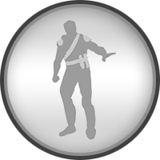
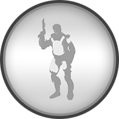

Mindscaper / Limit Breaker
Mindscaper / Limit Breaker
Mindscaper
Gefürchtet von Freund und Feind sind die Mindscaper, welche durch allerseits übernatürliche Kräfte ihren Weg durchsetzen. Aufgrund ihrer geistlichen Instabilität jedoch dürfen sie keine Waffen bei sich tragen.
Limit Breaker
Ausgestattet mit übernatürlichen Kräften, welche die menschlichen Limits weit übertreffen, sind die Limit Breaker oft diejenigen, die eine Schlacht auf den Kopf stellen können. Aufgrund der geistlichen Instabilität eines Limit Breakers ist es ihnen jedoch verboten, Waffen bei sich zu tragen.
3

Ambidexter / Pistolero
Ambidexter
Eine Abteilung der Technokraten, welche ausschließlich aus Menschen besteht, die beidhändig begabt sind. Ihre Bewaffnung schließt nur Handwaffen ein, jedoch benutzen die Ambidexter diese mit tödlicher Präzision.
Pistoleros
Die Pistoleros sind immer in Bewegung und schnell am Abzug. Sie verwenden ausschließlich Handwaffen, jedoch hat dies eine erhöhte Mobilität zum Vorteil.
4